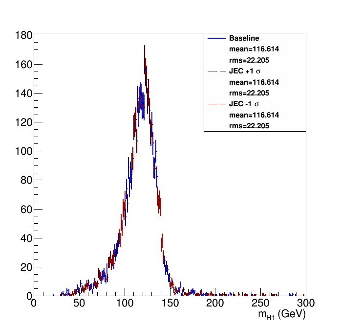
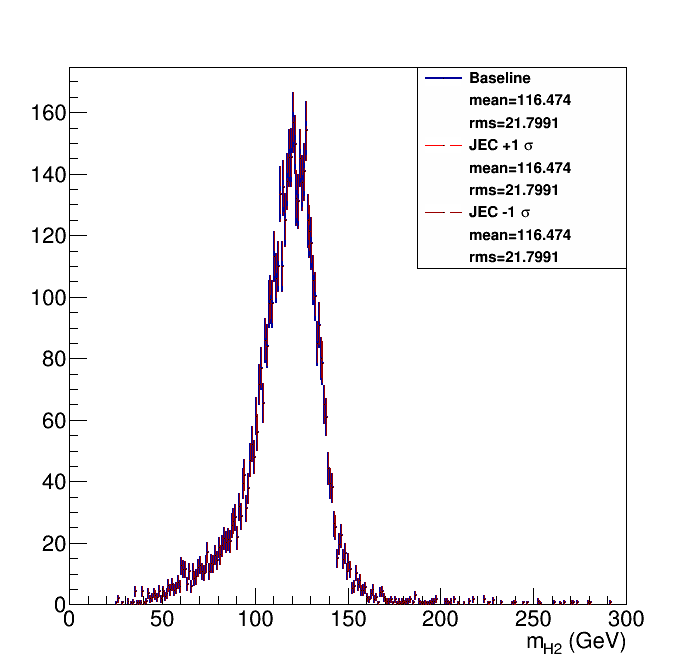
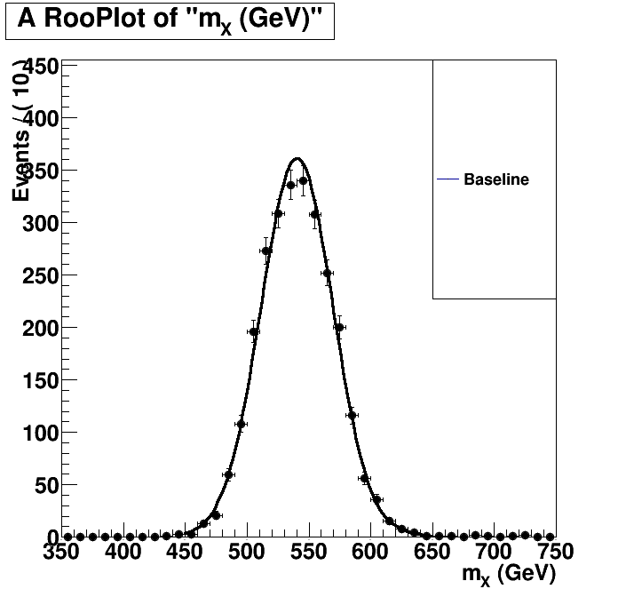
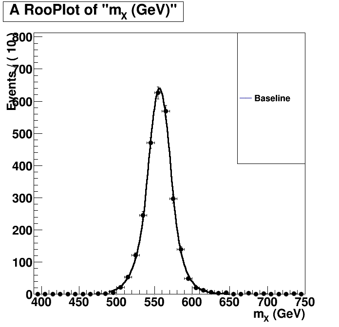

| Higgs 1 mass  | Higgs 2 mass  |
Without Kin-Fit. Fitted to an Exp-Gauss-Exp function.=== Baseline plot === |
With Kin-Fit. Fitted to an Exp-Gauss-Exp function.=== Baseline plot === norm = 589.976 sg_p0 = 556.778 0.444556 sg_p1 = 15.1397 0.450421 sg_p2 = 1.25232 0.0535044 sg_p3 = 1.14653 0.0836776 btag lnN 1.08783 - |